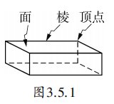
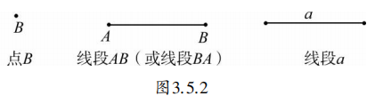
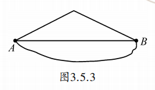
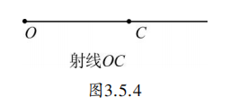
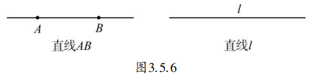

通过前面的学习，大家一定会感叹，生活中有那么多奇妙的图形！其实不管是什么样的图形，它们都是由一些基本的图形构成的。下面先看两个最基本的图形。
用削尖的铅笔轻触一张白纸，就在纸上留下了点的直观形象。在许多图示上，点常用来表示那些大小尺寸可以忽略不计的物体。例如，在小比例尺地图上，一个城市就常常用一个点来表示。许多点的聚集又可以表现不同的图形。
在日常生活中，一根拉紧的绳子、一根竹竿、人行横道线等都给我们以线段的形象。实际上，线段是无数排成行的点的聚集。
在前面抽象得到的多面体上，我们可以找到点和线的形象。例如，如图3.5.1所示的长方体，它由6个面组成，两个相邻的面交于一条线段，这条线段称为棱；两条相接的棱交于一个点，这个点称为顶点。

我们可以用如图3.5.2所示的方式来表示点和线段，其中在线段 \(AB\) 中，点 \(A\) 和点 \(B\) 称为线段 \(AB\) 的端点。

“抽象”是数学的一种基本思想和基本方法。由实际生活中的物体、图形抽象得到的点、线、面、体等数学概念，概括了客观事物的数学属性，但也不再是原来的事物了。例如，抽象得到的数学上的“点”是没有大小的，但如果我们在纸上画“点”，无论铅笔削得多尖，画出来的点都有大小。本册教科书第1、2章谈的是数与代数领域中数量和数量关系的抽象。现在我们又从简单图形和图形关系出发抽象出了一些最基本的几何概念。我们还将在此基础上进一步运用抽象等数学思想和方法，研究和解决各种几何图形中的问题。
如图3.5.3，从 \(A\) 地到 \(B\) 地有三条路径，你会选择哪一条？

在实际情况中，我们都希望走的路程越短越好，当然选择笔直的路线。这条路线就是线段 \(AB\) 。也就是我们平时所说的基本事实：两点之间线段最短。此时线段 \(AB\) 的长度，就是 \(A\) 、 \(B\) 两点间的距离。
如图3.5.4，把线段向一端无限延伸所形成的图形叫做射线（ray）。图中固定的点 \(O\) 称为射线 \(OC\) 的端点。

如图3.5.5，激光灯的光束，给我们以射线的形象。把线段向两端无限延伸所形成的图形叫做直线（straight line）。如图3.5.6，直线可以用两种不同的方法表示。

在纸上画出两个不同的点 \(A\) 和点 \(B\) ，过点 \(A\) 你能画几条直线？经过 \(A\) 、 \(B\) 两点画直线，你又可以画几条？
我们可以发现这样一个基本事实：经过两点有一条直线，并且只有一条直线。即两点确定一条直线。
1. 要在墙上钉牢一根木条，至少要钉几颗钉子？为什么？
答：至少钉2颗钉子，因为两点确定一条直线，木条才能固定。
2. 请举出生活中运用“两点之间线段最短”的几个例子。
答：修路时尽量取直道，狗跑向食物时沿直线奔跑，等等。
抽象思想： 从现实物体中抽象出点、线、面等基本几何概念。
模型思想： 用点、线描述现实世界中的位置、路径等。
公理化思想： 将“两点之间线段最短”“两点确定一条直线”作为基本事实，作为推理的起点。
✨ 从具体到抽象，用数学的眼光看世界 ✨